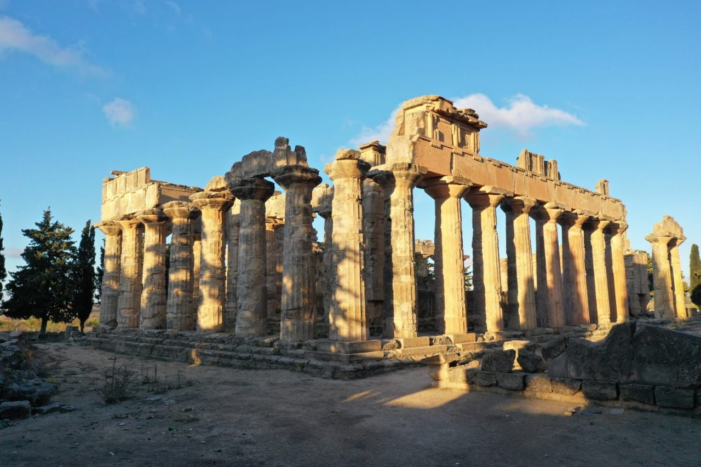
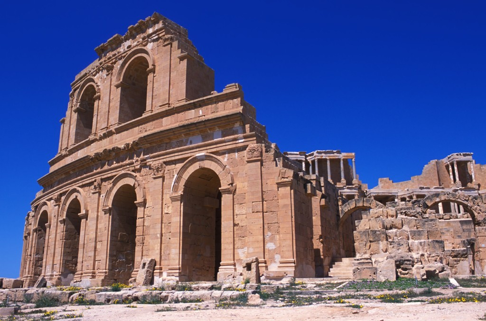
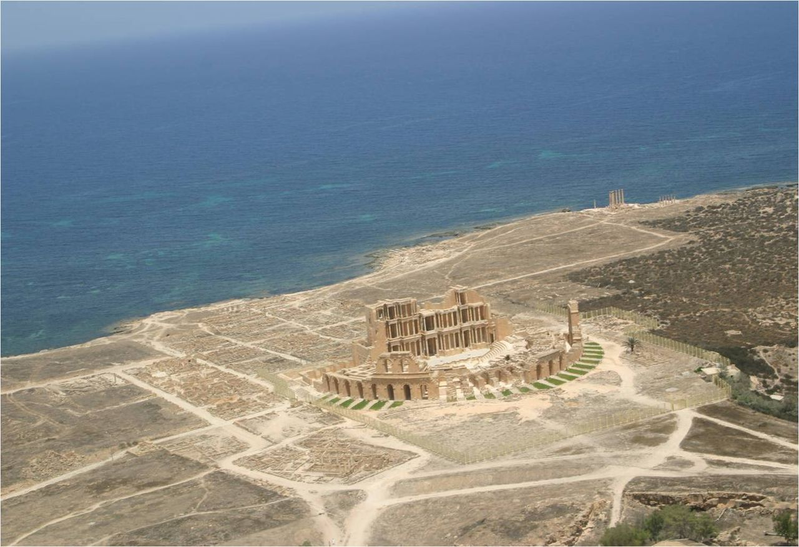
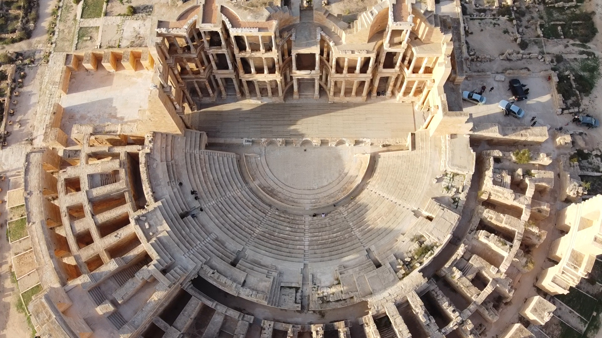
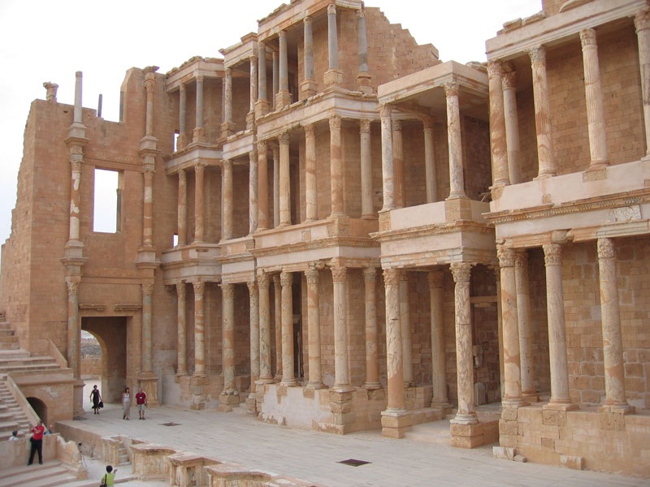
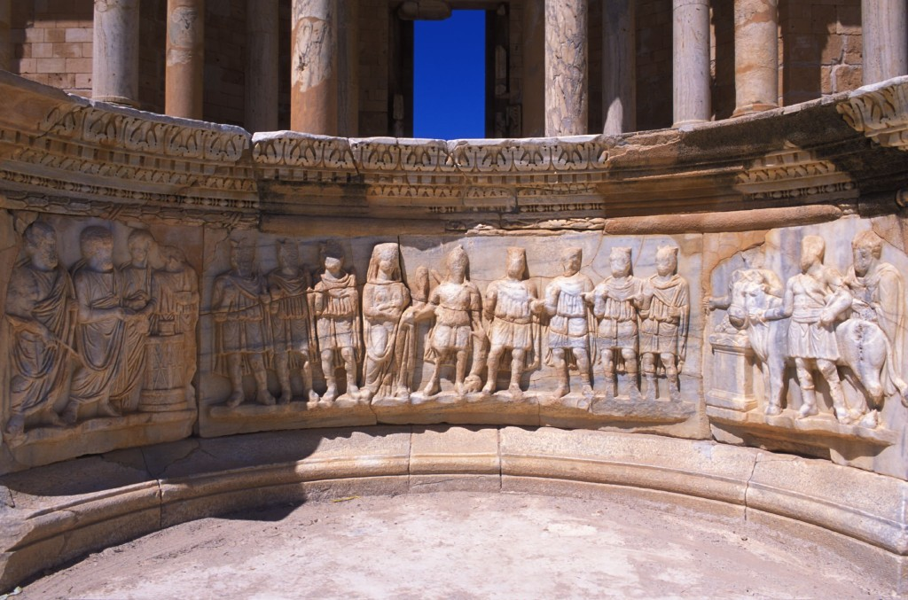
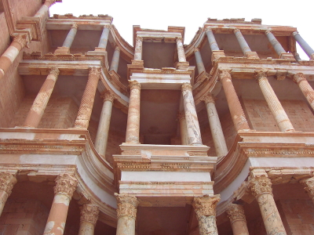

IMG-3204F45B5EAD6FE0cyrene-temple-of-zeus-001.jpeg1280×853شحات · unknownno feature · high · unknown
IMG-DA4CCE468FDABC9Bsabratha-roman-museum-001.jpg500×308صبراتة · sabrathano feature · thumbnail_only · unknown
IMG-B0B40B0DBE78EA04sabratha-punic-mausoleum-001.jpg3192×1815صبراتة · unknownno feature · high · unknown
IMG-9B22295C56974EF9sabratha-punic-mausoleum-002.jpg1454×2195صبراتة · unknownno feature · high · unknown
IMG-DD67F5FF23017E29sabratha-roman-museum-002.JPG5280×3956صبراتة · unknownno feature · high · unknown
IMG-9D9393FC6999022Asabratha-theatre-001.jpg1024×677صبراتة · unknownno feature · acceptable · unknown
IMG-5A94377424081137sabratha-theatre-002.jpeg1280×878صبراتة · unknownno feature · high · unknown
IMG-81E07C53392CB3A9sabratha-theatre-003.jpg3840×2160صبراتة · unknownno feature · high · unknown
IMG-BEED310631126A0Esabratha-theatre-004.jpg800×600صبراتة · unknownno feature · acceptable · unknown
IMG-52B65502E4686A4Esabratha-theatre-005.jpg1024×677صبراتة · unknownno feature · acceptable · unknown
IMG-204859F82D17E1B0sabratha-theatre-006.jpg400×300صبراتة · unknownno feature · thumbnail_only · unknown